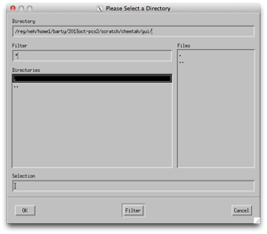

Using Cheetah at home
At CFEL/DESY
Cheetah is insstalled in /cfel/common.
> cheetah-gui should just work provided /cfel/common/bin is in your path.
More instructions to follow (or wander down the hall and ask).


Running the viewer alone
The Cheetah GUI uses the IDL virtual machine as an environment, which can be downloaded and used for free if you want to run the image browser at home.
Using this it is possible to navigate through the data even without being able to submit processing jobs. Sometimes this can be useful.
When starting the GUI you should be presented with a list of all previous experiments in which the GUI has previously been used.
Either select one of the existing experiments, or use ‘Different Directory’ to navigate to the location of the cheetah/gui folder described above and click OK.
(Memory of past experiments is stored in ~/.cheetah-crawler - this file can be edited by hand)
This should bring up the interface shown at the top of this page and should be sufficient to view an existing data set set up by someone else.
Instructions for setting up a new experiment from scratch can be found on the Setup page.